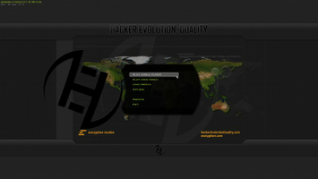
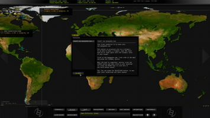

Hacker Evolution Duality
Dieser Artikel wurde für die folgenden Ubuntu-Versionen getestet:
Dieser Artikel ist mit keiner aktuell unterstützten Ubuntu-Version getestet! Bitte diesen Artikel testen und das getestet-Tag entsprechend anpassen.
Zum Verständnis dieses Artikels sind folgende Seiten hilfreich:
Hacker Evolution Duality  ist der dritte Teil der Spieleserie aus dem Hause Exosyphen Studios, welcher ein komplettes Redesign erfahren hat. Neben einem Einzelspielermodus ist es möglich, gegen Spieler aus der ganzen Welt anzutreten. Man schlüpft erneut in die Rolle von Brian Spencer und wurde im Verborgenen in Hacken und Cyberkriminalität ausgebildet. Die Xenti Corporation ist nur einen Schritt davon entfernt, das gesamte Internet und nahezu jegliches damit verbundene Gerät zu kontrollieren. Es liegt an Brian, die Xenti Corporation aufzuhalten.
ist der dritte Teil der Spieleserie aus dem Hause Exosyphen Studios, welcher ein komplettes Redesign erfahren hat. Neben einem Einzelspielermodus ist es möglich, gegen Spieler aus der ganzen Welt anzutreten. Man schlüpft erneut in die Rolle von Brian Spencer und wurde im Verborgenen in Hacken und Cyberkriminalität ausgebildet. Die Xenti Corporation ist nur einen Schritt davon entfernt, das gesamte Internet und nahezu jegliches damit verbundene Gerät zu kontrollieren. Es liegt an Brian, die Xenti Corporation aufzuhalten.
Die erfolgreichsten Spieler sind in der Bestenliste zu ersehen. Der zweite Teil Hacker Evolution Untold ist ebenfalls für Linux erschienen.
|  |  |
| Menü | Tutorial |
Installation¶
Desura¶
Nachdem man das Spiel über die Vertriebsplattform oder den Client erworben hat, kann das Spiel installiert [1] und über diesen gestartet werden.
Entwicklerseite¶
Nach dem Erwerb des Spiels auf der Entwicklerseite erhält man per E-Mail die Daten, um das Spiel aus der User Area  herunterladen zu können. Das Archiv anschließend entpacken [2] und im neuen Ordner den Unterordner Linux aufrufen. Hier das Archiv HackerEvolutionDuality-Linux.tar.gz ebenfalls entpacken. Diesen Ordner nach ~/Spiele verschieben . Anschließend können die nicht mehr benötigten Dateien gelöscht werden.
herunterladen zu können. Das Archiv anschließend entpacken [2] und im neuen Ordner den Unterordner Linux aufrufen. Hier das Archiv HackerEvolutionDuality-Linux.tar.gz ebenfalls entpacken. Diesen Ordner nach ~/Spiele verschieben . Anschließend können die nicht mehr benötigten Dateien gelöscht werden.
Für das Spiel ist es nötig
freeglut3
 mit apturl
mit apturl
Paketliste zum Kopieren:
sudo apt-get install freeglut3
sudo aptitude install freeglut3
zu installieren [3].
Das Spiel kann über HackerEvolutionDuality-32bit bzw. HackerEvolutionDuality-64bit aus dem Spieleverzeichnis heraus gestartet [4] und auf Wunsch ein Menüeintrag [5] vorgenommen werden.
Handbuch¶
Ein englischsprachiges Handbuch zum Spiel kann von steampowered.com  im PDF-Format heruntergeladen werden. Hier "Handbuch anzeigen" aufrufen. Alternativ die Version von hackerevolutionduality.com verwenden.
im PDF-Format heruntergeladen werden. Hier "Handbuch anzeigen" aufrufen. Alternativ die Version von hackerevolutionduality.com verwenden.
Demo¶
Ein Demo kann von hackerevolutionduality.com heruntergeladen und wie die Vollversion installiert werden.
Tastenkürzel¶
| Tastenkürzel | |
| Taste(n) | Funktion |
| F1 | Hilfe |
| F2 | Ziele des Levels einsehen. |
| ← / → | Karte scrollen |
| Pause | Pause |
| Esc | Verlassen |
| F8 | Musikwiedergabe stoppen. |
| F9 | Zum nächsten Titel springen. |
| F10 / F11 | Lautstärke ändern. |

Infobox¶
| Hacker Evolution Duality | |
| Originaltitel: | Hacker Evolution Duality |
| Genre: | Hacker-Simulation |
| Sprache: | |
| Veröffentlichung: | 2011 |
| Publisher: | exosyphen studios |
| Systemvoraussetzungen: | 1 GHz+ Prozessor - 1 GB RAM - 200 MB Festplattenspeicher - OpenGL-fähige Grafikkarte |
| Medien: | CD (1) / Download |
| Strichcode / EAN / GTIN: | - |
| Läuft mit: | nativ |
- Erstellt mit Inyoka
-
 2004 – 2017 ubuntuusers.de • Einige Rechte vorbehalten
2004 – 2017 ubuntuusers.de • Einige Rechte vorbehalten
Lizenz • Kontakt • Datenschutz • Impressum • Serverstatus -
Serverhousing gespendet von